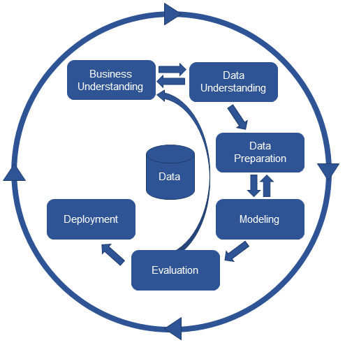

1 CRISP-DM
In our data science projects, we follow the process proposed in the “cross industry standard process for data mining (CRISP-DM)” from Wirth and Hipp (2000):

Figure 1.1: Cross Industry Standard Process for Data Mining (Wirth and Hipp (2000))
To learn more about this framework, review this presentation about the CRISP-DM.
Next, we show the most crucial steps of the framework.
1.1 Business understanding
- Define your (business) goal
- Frame the problem (regression, classification,…)
- Choose a performance measure (RMSE, …)
- Show the data processing components (data pipeline)
1.2 Data understanding
- Import data
- Clean data
- Format data properly (numeric or categorical)
- Create new variables
- Overview about the complete data
- Split data into training and test set using stratified sampling
- Discover and visualize the data to gain insights (on a copy of the training data)